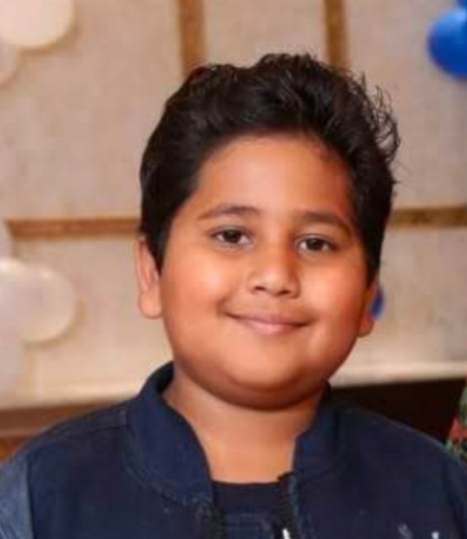

A famous quotation by Thomas Jefferson is a real thought .This quote leads to a way saying "Read Books" ,As what else can give you knowledge .I came into a great interest of reading books when on Diwali this year I got the book

It really is a fascinating book when I read one more book about

It's like yesterday when I got this interest but this is a huge interest I've also read a book titled "From Box to Books"by Ben Carson which tells about how he got nice interest in books and;Well that's another story.
Those books takes me to another world where I can get knowledge ,fun ,a new adventure ,tragic to comedy stories and I am free to go wherever I want to .It's also something our brain finds 'fascinating' from fascinating I mean real fascinating full of new adventures in Goosebumps the RL Stine collection the author himself says "A book must have three parts Starting Ending and the main in the miiddle "Twist."